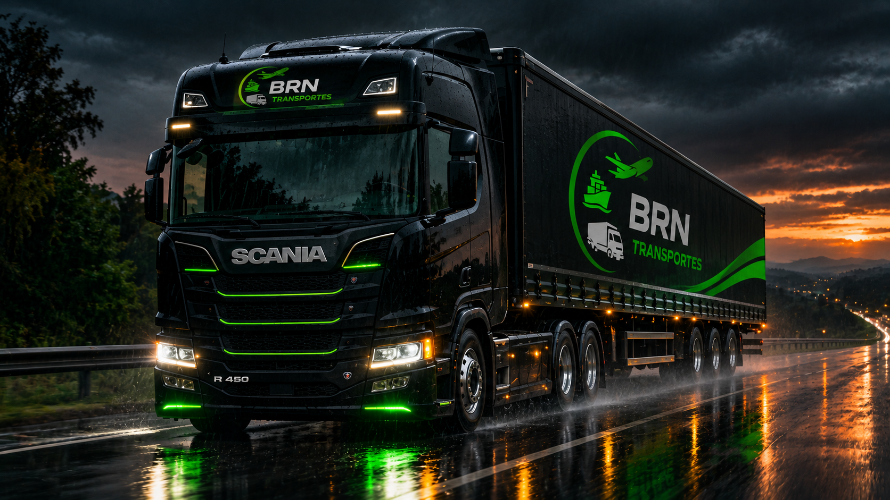

Rastreamento de encomendas
Consulta das entregas e acompanhamento dos status e movimentações cadastradas ao longo do processo logístico.
A BRN Transportes e Logística é uma empresa inteiramente fictícia, criada como parte de um projeto acadêmico. Sua inspiração surgiu no universo do jogo Euro Truck Simulator, em que um dos integrantes do grupo já utilizava a BRN como uma empresa virtual de transportes.
A ideia de aproveitar essa identidade surgiu durante o desenvolvimento do trabalho acadêmico. O grupo decidiu transformar o conceito da transportadora virtual em uma plataforma web, aproximando a experiência dos simuladores de situações comuns ao setor de logística.
Dessa forma, a BRN passou a representar mais do que uma empresa criada dentro de um jogo: tornou-se o cenário de uma aplicação desenvolvida para estudar computação em nuvem, gerenciamento de informações, segurança e inteligência artificial.

A plataforma BRN está sendo desenvolvida como uma demonstração prática de soluções digitais aplicadas ao ambiente de uma transportadora fictícia.
Consulta das entregas e acompanhamento dos status e movimentações cadastradas ao longo do processo logístico.
Ambiente com autenticação para que cada usuário tenha acesso às informações relacionadas às suas próprias encomendas.
Análise das avaliações dos clientes, utilizando inteligência artificial para identificar sentimentos e possíveis problemas nas entregas.
Painel destinado à administração das entregas, ao acompanhamento das avaliações e à visualização de informações operacionais.
A BRN Transportes e Logística é resultado da colaboração de quatro integrantes, responsáveis pelo desenvolvimento da proposta acadêmica e de sua plataforma digital.
Integrante do projeto
Integrante do projeto
Integrante do projeto
Integrante do projeto
A BRN Transportes e Logística não é uma transportadora comercial e não realiza operações reais de transporte de cargas. Sua marca, veículos, operações e informações de entregas são utilizados exclusivamente para fins demonstrativos e educacionais.
O projeto não possui vínculo oficial com o jogo Euro Truck Simulator ou seus desenvolvedores. O jogo serviu apenas como inspiração para a criação da proposta.
Voltar ao início